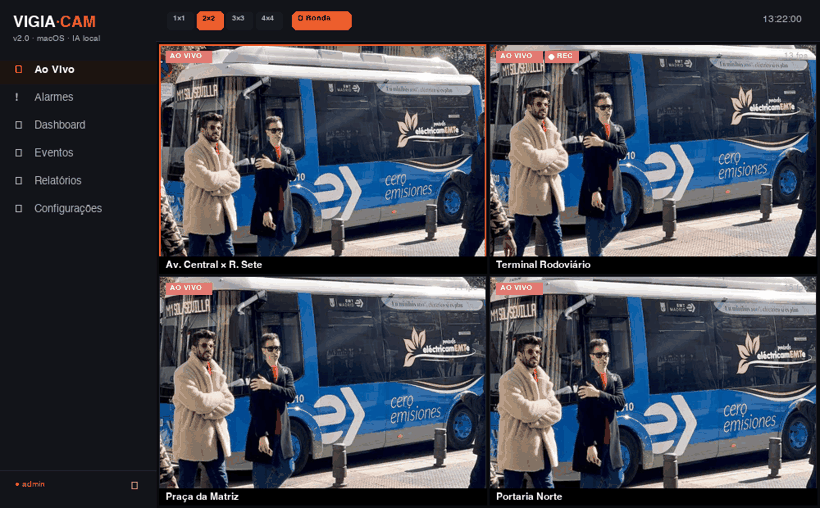

Plataforma desktop nativa para macOS que monitora múltiplas câmeras RTSP/HLS ao vivo em videowall, com detecção de pessoas e veículos por IA em tempo real (YOLOv8n no Neural Engine) e alarmes inteligentes por regras configuráveis. Captura de evidências com cadeia de custódia SHA-256, máscaras de privacidade LGPD, relatórios em PDF e controle de acesso por perfis — pensado para editais de CFTV e segurança pública.

Videowall ao vivo com detecção por IA, alarme de aglomeração e indicadores de gravação — saída real do modelo YOLOv8n.
Paridade com os principais VMS do mercado (Milestone, Digifort, Intelbras, Genetec), rodando 100% offline.
Mosaicos 1×1 a 4×4, paginação por categoria, rodízio automático de câmeras (ronda) e tela cheia.
Ao VivoYOLOv8n via Vision/CoreML no Neural Engine, identificando pessoas, veículos e mais de 80 classes em tempo real.
On-deviceRegras por classe, limite e câmera (intrusão, aglomeração, congestionamento) com banner ao vivo, som e log.
AnalíticosSnapshot e gravação de clipes com carimbo de data/hora, hash SHA-256 e cadeia de custódia para validade probatória.
Cadeia de custódiaMáscaras de privacidade por câmera que tampam áreas sensíveis ao vivo, nas gravações e nos snapshots.
LGPDRelatórios paginados de eventos por período, com autoria e totais — prontos para instrução de processos.
ExportaçãoPerfis admin/operador/visualizador com senha PBKDF2 e trilha de auditoria de todas as ações.
RBACConfigurações e usuários protegidos com AES-GCM (chave no Keychain). Tudo armazenado localmente.
AES-GCMReconexão automática com backoff e watchdog de travamento — as câmeras voltam sozinhas quando o sinal retorna.
Alta disponibilidadeNativo, leve e sem dependência de nuvem.